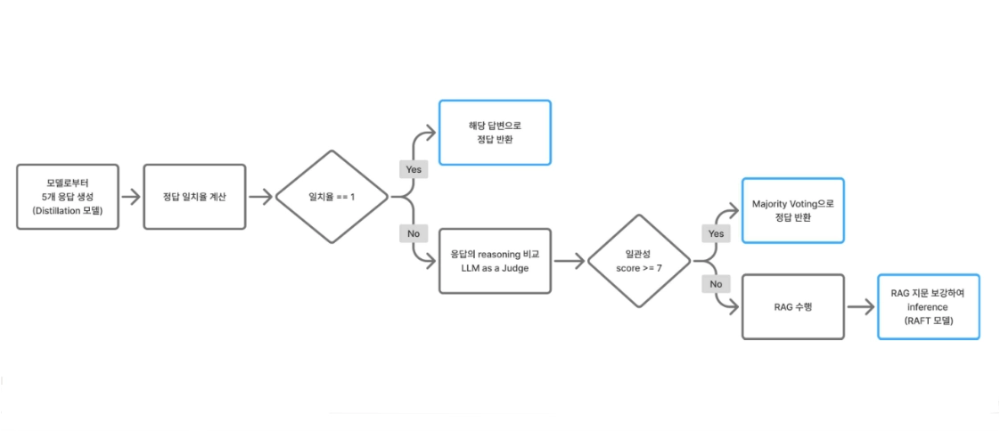
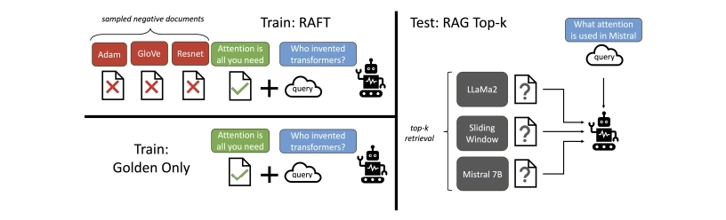
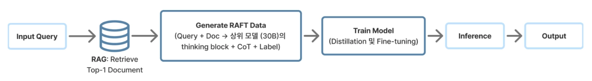

• 지식 상태 분류: 동일 문항에 대해 5회 샘플링을 진행하여 답변의 일관성을 측정
• LLM as a Judge 기반 검증: 혼란 상태의 문항에 대해 Reasoning 분석을 통해 일관성 판단
• 선택적 RAG 및 RAFT 활용: 검증 점수가 낮은 문항에 한해서만 RAG 컨텍스트를 제공하고, 문서 선별 능력이 강화된 RAFT 모델로 최종 추론을 수행
• 결과: 4B Reasoning 모델 단순 추론(0.6027) 대비 최종 Macro F1 0.6701 달성


| 구분 | 특징 |
|---|---|
| 정답 샘플 | 문제 유형을 먼저 선언하는 명확한 reasoning |
| None 샘플 | 추론이 너무 길어 정답 출력 실패 |
| 오답 원인 | 이중 추론에 취약, 지문 과의존, 못 찾으면 5 출력 |
• 팀 내 방법론 공유를 위해 직접 논문 리뷰 진행
→ 논문 리뷰 포스팅 보기 (tistory)• 결과: RAFT 적용 시 단순 RAG 대비 성능 0.13 향상 (단순 RAG 도입 시 발생하는 노이즈 문제를 해결하기 위해, 학습 단계에서부터 문서의 필요성을 스스로 판단하도록 유도하는 RAFT 방법론의 효과 입증)